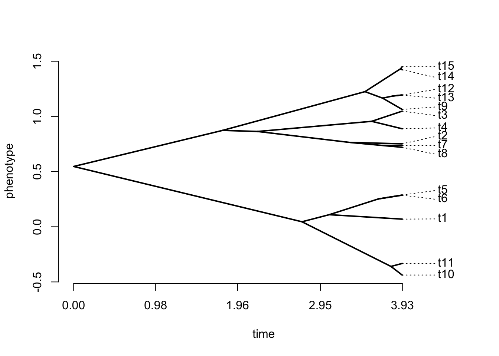
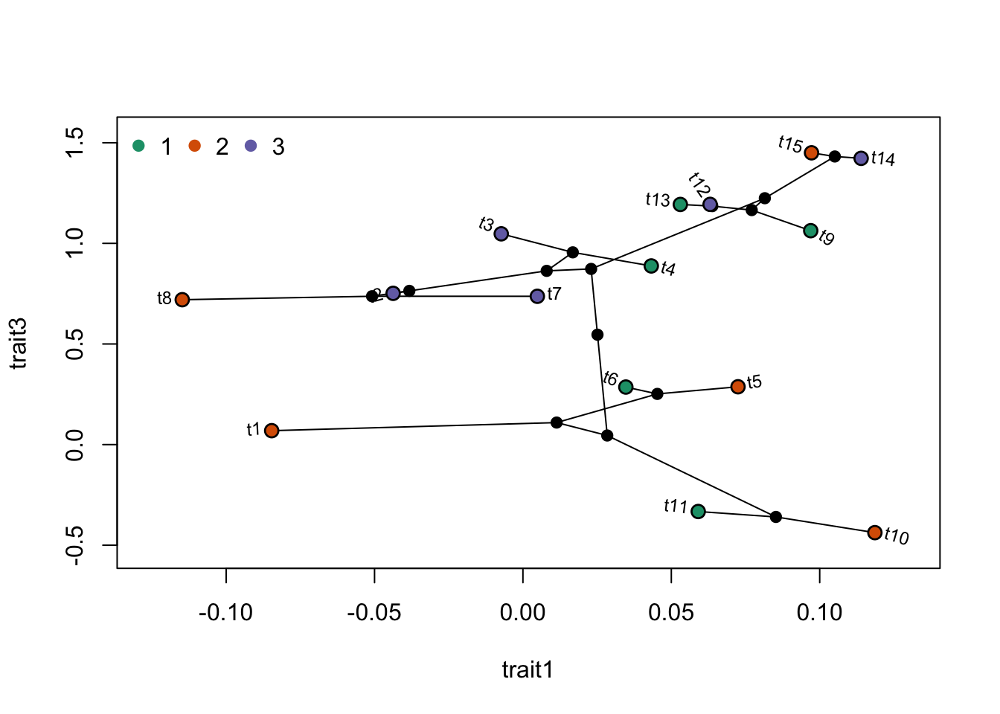

14 Introduction aux phylogénies dans R
Il existe de nombreux packages pour les analyses phylogénétiques dans R. Je ne vais pas tous les énumérer ici, mais vous pouvez avoir une bonne idée des options disponibles en consultant la vignette phylogénétique de R maintenue par Brian O’Meara. Elle est principalement orientée vers les méthodes comparatives phylogénétiques, mais c’est un bon point de départ.
Le package le plus basique pour utiliser des arbres dans R est ape, qui vous permet de lire et de tracer des arbres.
14.1 Importer et tracer des arbres
14.1.1 Simuler un arbre
Tout au long de ces exercices, nous utiliserons souvent des arbres simulés, qui sont très utiles à des fins pédagogiques. Les arbres peuvent être simulés en utilisant plusieurs fonctions, mais voici un exemple pour simuler un arbre avec 15 espèces.

Vous enregistrez l’arbre au format nexus dans un fichier. Mais avant de le faire, il est recommandé de définir le répertoire de travail dans le même dossier où votre script est enregistré. Vous pouvez le faire dans RStudio dans le menu Session>Set Working Directory>To Source File Location.
14.1.2 Simulation de caractères
Les caractères peuvent également être facilement simulés dans R. Par exemple, vous pourriez simuler un caractère en utilisant un modèle de Mouvement Brownien (BM) avec le code suivant.
trait1 <- fastBM(tree, sig2=0.01, nsim=1, internal=FALSE)
# To get trait values for tree tips:
trait1## t3 t4 t7 t8 t2 t14
## -0.007306853 0.043251831 0.004858391 -0.114795593 -0.043737891 0.113964926
## t15 t9 t12 t13 t5 t6
## 0.097243984 0.096978766 0.063069656 0.053040643 0.072476832 0.034675083
## t1 t10 t11
## -0.084659118 0.118596501 0.059071786Ensuite, enregistrons ce trait dans un fichier en faisant comme s’il s’agissait de nos données d’origine.
write.table(matrix(trait1,ncol=1,dimnames=list(names(trait1),"trait1")), file="mytrait.csv", sep=";")Maintenant que nous avons simulé un arbre et un caractère, effaçons ce que nous avons fait jusqu’à présent de l’environnement R et faisons comme si c’étaient nos données pour les prochaines sections.
14.2 Importer des données dans R
Voici comment vous devez importer vos données dans R.
Le format d’arbre dans ape contient plusieurs informations, et il est utile de savoir comment y accéder. Par exemple, les étiquettes des extrémités peuvent être consultées avec tree$tip.label et les longueurs des branches avec tree$edge.length. Nous verrons d’autres options dans d’autres exercices, mais si vous voulez des informations plus détaillées sur la façon dont les objets “phylo” sont organisés, vous pouvez consulter le fichier d’aide ?read.tree ou ce document préparé par Emmanuel Paradis, l’auteur de ape.
14.3 Représenter des arbres
Tracer des arbres est l’un des aspects les plus intéressants de l’utilisation de R. Les options sont nombreuses et les possibilités larges. La fonction la plus courante est plot.phylo du package ape, qui propose de nombreuses options différentes. Je vous conseille vivement de regarder de près les différentes options de la fonction ?plot.phylo. Voici un exemple de base.

Mais R est aussi intéressant pour représenter des caractères à côté des arbres. Si vous avez un caractère catégoriel, vous pouvez l’utiliser pour colorer les extrémités de la phylogénie.
# Générer un caractère discret
trait2 <- as.factor(sample(c(1,2,3),size=length(tree$tip.label),replace=TRUE))
# Créer une palette de couleur
library(RColorBrewer)
ColorPalette1 <- brewer.pal(n = length(levels(trait2)), name = "Dark2")
plot(tree, type="p", use.edge.length = TRUE, label.offset=0.2,cex=1)
tiplabels(pch=21,bg=ColorPalette1[trait2],col="black",cex=1,adj=0.6)
op<-par(xpd=TRUE)
legend(0,0,legend=levels(trait2),col=ColorPalette1,
pch=20,bty="n",cex=1,pt.cex=1.5,ncol=length(levels(trait2)))
Un résultat similaire pourrait être obtenu avec une variable continue. Ici, nous utiliserons le modèle de Mouvement Brownien, que nous étudierons dans une prochaine leçon, pour simuler le caractère continu.
# Diviser un trait continu en catégories
trait1.cat <- cut(trait1[,1],breaks=8,labels=FALSE)
# Créer une palette de couleur
ColorPalette2 <- brewer.pal(n = 8, name = "Blues")
# Représenter l'arbre
plot(tree, type="p", use.edge.length = TRUE, label.offset=0.2,cex=1)
tiplabels(pch=21,bg=ColorPalette2[trait1.cat],col="black",cex=1,adj=0.6)
op<-par(xpd=TRUE)
legend(0,0,legend=levels(cut(trait1[,1],breaks=8)),
col=ColorPalette2,pch=20,bty="n",cex=0.7,pt.cex=1.5,ncol=4)
Comme prévu pour un caractère simulé avec un mouvement brownien, vous pouvez voir que les espèces étroitement apparentées ont tendance à avoir des valeurs de caractère plus similaires.
Une autre option pour représenter un paramètre continu est d’utiliser la fonction table.phylo4d du package adephylo pour représenter le trait, où ses valeurs sont représentées par des tailles et des couleurs différentes. Il est également possible de tracer plusieurs caractères en même temps.
Notez que vous devrez installer les packages phylobase et adephylo pour exécuter ces fonctions s’ils ne sont pas installés.
library(phylobase)
library(adephylo)
trait3 <- fastBM(tree, sig2=0.1, nsim=1, internal=FALSE) #simuler un caractère
trait.table <- data.frame(trait1=trait1[,1], trait3)
obj <- phylo4d(tree, trait.table) # construire un objet phylo4d
op <- par(mar=c(1,1,1,1))
table.phylo4d(obj,cex.label=1,cex.symbol=1,ratio.tree=0.8,grid=FALSE,box=FALSE)
On peut aussi représenter avec un traitgram:

Enfin, il est également possible de représenter un arbre sur un graphique en deux dimensions, en colorant les points avec la variable catégorielle.
phylomorphospace(tree,trait.table)
points(trait.table,pch=21,bg=ColorPalette1[trait2],col="black",cex=1.2,adj=1)
legend("topleft",legend=levels(trait2),
col=ColorPalette1,pch=20,bty="n",cex=1,pt.cex=1.5,ncol=length(levels(trait2)))
14.4 Gérer plusieurs arbres
Dans plusieurs cas, il est important de savoir comment gérer plusieurs arbres dans R. Ceux-ci sont normalement stockés dans un objet multiPhylo. Voyons un exemple.
## 10 phylogenetic treesVous pouvez voir que l’objet n’est pas le même qu’un objet phylo. Par exemple, si vous utilisez le code plot(trees), vous serez invité à appuyer sur Entrée pour passer d’un arbre à l’autre. Pour accéder aux arbres individuels, vous devez utiliser la technique suivante.
##
## Phylogenetic tree with 15 tips and 14 internal nodes.
##
## Tip labels:
## t3, t4, t5, t14, t15, t8, ...
##
## Rooted; includes branch lengths.
14.5 Manipuler les arbres
Il existe plusieurs manipulations qui peuvent être effectuées sur les arbres. Voici quelques exemples.


14.5.3 Obtenir les distances cophénétiques
## t3 t4 t7 t8 t2 t14 t15
## t3 0.0000000 0.7285289 3.4533793 3.4533793 3.453379 4.29496600 4.29496600
## t4 0.7285289 0.0000000 3.4533793 3.4533793 3.453379 4.29496600 4.29496600
## t7 3.4533793 3.4533793 0.0000000 0.4962115 1.250834 4.29496600 4.29496600
## t8 3.4533793 3.4533793 0.4962115 0.0000000 1.250834 4.29496600 4.29496600
## t2 3.4533793 3.4533793 1.2508336 1.2508336 0.000000 4.29496600 4.29496600
## t14 4.2949660 4.2949660 4.2949660 4.2949660 4.294966 0.00000000 0.03691962
## t15 4.2949660 4.2949660 4.2949660 4.2949660 4.294966 0.03691962 0.00000000
## t9 4.2949660 4.2949660 4.2949660 4.2949660 4.294966 0.88909442 0.88909442
## t12 4.2949660 4.2949660 4.2949660 4.2949660 4.294966 0.88909442 0.88909442
## t13 4.2949660 4.2949660 4.2949660 4.2949660 4.294966 0.88909442 0.88909442
## t5 7.8556290 7.8556290 7.8556290 7.8556290 7.855629 7.85562897 7.85562897
## t6 7.8556290 7.8556290 7.8556290 7.8556290 7.855629 7.85562897 7.85562897
## t1 7.8556290 7.8556290 7.8556290 7.8556290 7.855629 7.85562897 7.85562897
## t10 7.8556290 7.8556290 7.8556290 7.8556290 7.855629 7.85562897 7.85562897
## t11 7.8556290 7.8556290 7.8556290 7.8556290 7.855629 7.85562897 7.85562897
## t9 t12 t13 t5 t6 t1 t10
## t3 4.2949660 4.2949660 4.2949660 7.8556290 7.8556290 7.855629 7.855629
## t4 4.2949660 4.2949660 4.2949660 7.8556290 7.8556290 7.855629 7.855629
## t7 4.2949660 4.2949660 4.2949660 7.8556290 7.8556290 7.855629 7.855629
## t8 4.2949660 4.2949660 4.2949660 7.8556290 7.8556290 7.855629 7.855629
## t2 4.2949660 4.2949660 4.2949660 7.8556290 7.8556290 7.855629 7.855629
## t14 0.8890944 0.8890944 0.8890944 7.8556290 7.8556290 7.855629 7.855629
## t15 0.8890944 0.8890944 0.8890944 7.8556290 7.8556290 7.855629 7.855629
## t9 0.0000000 0.4685481 0.4685481 7.8556290 7.8556290 7.855629 7.855629
## t12 0.4685481 0.0000000 0.2174902 7.8556290 7.8556290 7.855629 7.855629
## t13 0.4685481 0.2174902 0.0000000 7.8556290 7.8556290 7.855629 7.855629
## t5 7.8556290 7.8556290 7.8556290 0.0000000 0.5720997 1.742611 2.395633
## t6 7.8556290 7.8556290 7.8556290 0.5720997 0.0000000 1.742611 2.395633
## t1 7.8556290 7.8556290 7.8556290 1.7426110 1.7426110 0.000000 2.395633
## t10 7.8556290 7.8556290 7.8556290 2.3956328 2.3956328 2.395633 0.000000
## t11 7.8556290 7.8556290 7.8556290 2.3956328 2.3956328 2.395633 0.268201
## t11
## t3 7.855629
## t4 7.855629
## t7 7.855629
## t8 7.855629
## t2 7.855629
## t14 7.855629
## t15 7.855629
## t9 7.855629
## t12 7.855629
## t13 7.855629
## t5 2.395633
## t6 2.395633
## t1 2.395633
## t10 0.268201
## t11 0.000000